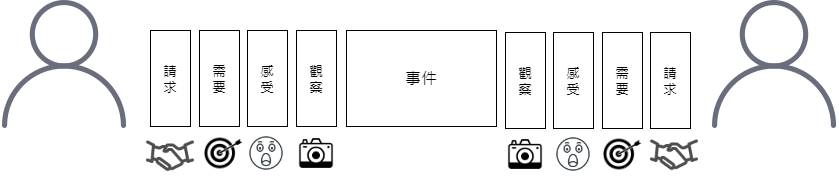

Photo by Etty Fidele on Unsplash

Photo by Darius Bashar on Unsplash
心得
以觀察, 感受, 需要, 請求和所發生的事件拉出一個空間, 讓溝通的門有機會敞開, 進而有機會達成共識而非開啟另一個爭執的戰場
某次騎車和女友去虎頭山公園, 停車時有了些爭執, 事後溝通說出了: 我有種被你鄙視的感覺,
當下以為自己是在表達感受, 希望讓對方理解, 殊不知剛好相反, 書中提到這是一種對別人言語或行為的評價, 實際上的意思是, 我認為有被”你”鄙視的感覺, 反而讓對方更生氣, 看到書裡的這一段說明才有種恍然大悟的感覺
試著把對話當中的”你”轉換成”我”, 減低容易引起對方反駁與反感的機會, 當我們說”你為什麼不”的時候, 常常不是在詢問, 而是想要指正, 最近發生的例子特別有感覺
疫苗預約正熱, 某天下班老爸打電話給我, 開頭劈哩啪啦就提到: 你為什麼不去填寫意願呢? 你為什麼不來問我呢? 你是不是怎麼樣怎麼樣…, 雖然內心知道這是關心的一種表現方式, 但聽到當下還是有一股情緒湧現, 後來有意識到這件事, 試著表達自己知道這是關心, 下班後很累, 聽到這些話當下自己的感覺還是不太舒服的
四個空間

觀察(observations)
一種不帶有任何評論, 評價的觀察
觀察什麼? 先觀察那些引起我們情緒反應的事實與事件, 然後據實以報
針對同一個事件不同的表達
表達A: 你早上幹嘛不理我
表達B: 今天早上, 我們兩個人都沒有說到話
表達A: 你覺得我囉嗦是嘛
表達B: 當我跟你說話時, 我看到你一直低頭看手機
非單純觀察的詞彙
容易引起對方的反駁與反感, 對於溝通品質有極大的影響
- 你每次都
- 你老是
- 你總是
- 你經常
- 你很少
- 你從來都不
- 你來了 vs 你又來了
感受
感受是我們跟別人建立連結非常重要的元素, 能夠讓自己探索並明白內心的需求, 進而釐清我有甚麼需求需要被滿足
這裡所說的感受指的是我們內心的感覺, 也就是我們對於自己內心狀態的陳述, 而非我們對別人言語或行為的評價
舉例:
我覺得寂寞 => 我內心的狀態
我覺得你對我冷漠 => 對別人行為的評斷
很多時候, 我們會偷偷夾帶對別人的批判, 把批判變成感受
舉例:
我覺得你在生氣
我有種被你鄙視的感覺 => 實際上的意思是, 我認為有被你鄙視的感覺
我感覺你都不在意我
我覺得他不尊重我
需要
在需要沒有獲得滿足時, 我們往往傾向於把箭頭指向對方的行為, 人只要感受到指責, 自尊心就會在第一時間啟動他的防禦機制
當我們說”你為什麼不”的時候, 常常不是在詢問, 而是想要指正, 在溝通上這是我們容易混淆的地方
請求
前面三個階段, 都是為了讓對方知道我內心正在發生甚麼狀態
請求 vs 要求: 我們平常比較傾向要求, 原因是要求的時候就會變成是, 你應該, 你不應該, 你必須, 我有權利要求你, 這是我們的自尊心巧妙避開請求的方式, 背後真正想說的是, 我需要你的幫忙, 請跟我合作, 如何分辨呢?
以非暴力溝通的角度來看, 這種一旦對方不答應就表現出生氣, 挫折, 沮喪, 逼迫, 任何試圖給對方壓力的狀況, 都算是要求而非請求, 請求必須是讓對方理解的, 可以拒絕的, 還要讓對方心甘情願同意的
請求三要件
- 明確
- 正向: 讓對方知道可以怎麼做, 反例: 你不要, 你不可以, 特別容易造成對方反感
- 引發具體行動: 具體到當下就能引發可行的行動(doable)